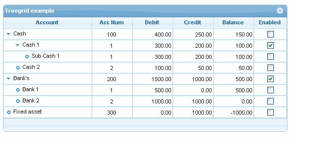

TreeGrid¶
TreeGrid is a way to represent hierarchical data in grid.
TreeGrid supports both the Nested Set model and the Adjacency model. Good articles describing the Nested Set model can be found here:
Storing Hierarchical Data in a Database
Managing Hierarchical Data in MySQL
Warning
Before you begin with the tree grid, it is highly recommended to read the articles listed above or any other related to hierarchical data representation articles.
When implemented the Guriddo jqGrid TreeGrid can look like this:

Options¶
The following options can be set in the grid options to configure the treeGrid
| Property | Type | Description | Default |
|---|---|---|---|
| ExpandColClick | boolean | when true, the tree is expanded and/or collapsed when we click on the text of the expanded column, not only on the image | true |
| ExpandColumn | string | indicates which column (name from colModel) should be used to expand the tree grid. If not set the first one is used. Valid only when treeGrid option is set to true. | null |
| expColInd | integer | The index of the column in colModel which correspond to the ExpandColumn. It is set automatically from the script | 0 |
| treedatatype | mixed | Determines the initial datatype (see datatype option). Usually this should not be changed. During the reading process this option is equal to the datatype option. | null |
| treeGrid | boolean | Enables (disables) the tree grid format. | false |
| treeGrid_bigData | boolean | Enables ( if set to true) the tree grid pagging with root nodes as described here | false |
| treeGridModel | string | Determines the method used for the treeGrid. Can be nested or adjacency. | nested |
| treeIcons | object | This object set the icons used in the tree. The icons are defined in styleUI object property treegrid. The default values are: { plus: treegrid.icon_plus, minus: treegrid.icon_minus, leaf: treegrid.icon_leaf } |
|
| treeReader | object | extends the colModel defined in the basic grid. The fields described here are added to end of the colModel array and are hidden. This means that the data returned from the server should have values for these fields. For a full description of all valid values see below. | empty |
| tree_root_level | numeric | Determines the level where the root element begins when treeGrid is enabled | 0 |
The treeReader property (which is part from grid options) adds dynamically columns to the colModel property of the basic grid when treeGrid property is set to true. Syntax:
treeReader : { property1 : value1 ... propertyN : valueN }
The treeReader property adds different columns in the colModel depending on the treeGridModel property - i.e. we have different configurations for the different models - Nested Set Model and Adjacency Model.
Methods¶
In the methods below, the following parameters are mostly used:
- record
- rowid
record means the record object from data parameter, which can be obtained via the getRowData method like this:
var record = jQuery("#grid_id").jqGrid('getRowData', rowid, true);
Note the second parameter in the method. If the second parameter is omitted or set to false (default) the returned value is the from the current (view-able) data set. If the row can not be found a false is returned.
rowid is the id of the row.
addChildNode( nodeid, parentid, data, [expandData] )
Add a node in the tree according the value of the parentid parameter. The nodeid is the unique values in the row. If set to empty string the method gets the next max number + 1 from the data. if parendid is null the node is added as root. If the parentid is valid id of existing row the data is added as child of the that row. Data is a data to be inserted.
parameters
- nodeid -string - a unique value of the row to be set. If not set it is calculated as max+1 length of the data
- parentid - string - if null the node is added as root. If set and is valid id the row is added as a child.
- data - object - data to be added into the grid in name:value pair. Name correspond from colModel
- expandData - boolean - if set to true the data row is expanded. Default is false
return
nothing
collapseNode( record )
Collapse the node at specified record - set expanded field to false and and toggle the icon to collapsed. Method usually is used after collapseRow method
parametric
- record1 - object
return
jqGrid object
collapseRow( record )
Collapses the current row, making the children hidden. Method is usually used before collapseNode method
parameters
- record1 - object
return
jqGrid object
delChildren( rowid )
Deletes the children of the node identified by rowid. The method does not delete the children on server.
parameters
- rowid - string
return
jqGrid object
delTreeNode( rowid )
Deletes the specified node identified by rowid and all child nodes of that node. Does not delete the node at server
parameters
- rowid - string
return
jqGrid object
expandNode( record )
Expand the node at specified record - set expanded field to true and and toggle the icon to expanded. Method usually is used after expandRow method
parameters
- record1 - object
return
jqGrid object
expandRow( record )
Expanded the current row, making the children visible. Method is usually used before expandNode method
parameters
- record1 - object
return
jqGrid object
getFullTreeNode(record, [expand])
Returns array of all nodes of the specified record; returns empty array if none. If the parameter expand is true the expand property is set to true.
parameters
- record1 - object
- expand - boolean
return
array
getNodeAncestors( record )
Returns array of the ancestors of the specified record
parameters
- record1 - object
return
array
getNodeChildren( record, [currentview] )
Returns array of child nodes of the specified record; returns empty array if none. If the parameter currentview is true the data is returned formatted as displayed into the grid, if false the source (non formatted) data is returned. Default is false.
parameters
- record1 - object
- currentview - boolean
return
array
getNodeDepth( record )
Return the depth of the specified record
parameters
- record1 - object
return
integer or null
getNodeParent( record )
Returns the parent node of the specified record
parameters
- record1 - object
return
object
getRootNodes( [currentview] )
Return an array of the root nodes. If the parameter currentview is true the data is returned formatted as displayed into the grid, if false the source (non formatted) data is returned. Default is false.
parameters
- currentview - boolean
return
array
isNodeLoaded( record )
Returns true if the node is already loaded
parameters
- record1 - object
return
boolean
isVisibleNode( record )
Returns true or false if the node is visible or not
parameters
- record1 - object
return
boolean
reloadNode(reccord, [reloadcurrent])
Reload the only data of the node (and its children) specified with record. If the reloadcurrent parameter is true (default is false) the data of the record is reloaded too, if false only child nodes are reloaded.
parameters
- record1 - object
- reloadcurrent - boolean
return
jqGrid object
setLeaf( record, state, [collapsed])
Visually set node (record) to a leaf or change it status to be not a leaf. Usually the method is used when all the child nodes are deleted and the status of the parent should be set to leaf or if a child node is added to leaf node. The status is set with the state parameter, if set to false the node is marked as leaf, if true as parent. The collapsed parameter have effect only if the state is true. If this parameter is true a the plus icon is set and the node is marked as collapsed.
parameters
- record1 - object
- state - boolean
- collapsed - boolean
return
jqGrid object
searchTree( recs )
This method is used when a search is activated on local data. The method does not perform a search on server. Parameter passed to this method are records which contain the search result. The purpose of the method is to return all ancestors from the search results. The method is used in addLocalData when a search is activated.
parameters
- recs - array of records with search result
return
array of search result with ancestors included.
setTreeRow( rowid, data)
Updates the values in the tree (using the data object) in the row with id = rowid.
parameters
- rowid - string - the id of the row to be updated
- data - object - The syntax of data object is: {name1:value1,name2: value2…} where the name is the name of the column as described in the colModel and the value is the new value.
return
boolen true on success, false otherwise.
SortTree( sortname, dir, [sorttype], [datefmt])
Sort dynamically the tree grid by given name sortname and direction dir. The name should be valid name from colModel and direction can be 'asc' for ascending order and 'desc' for descending order. Optionally the sorttype parameter (see colModel sorttype) can be set and date format datefmt if the field is date. The method work when multi sorting is on.
parameters
- sortname - string - a name from colModel
- dir - string can be asc or desc
- sortype - string the type of the field to be sorted - text, numeric,...
- datefmt - string the date format of the field in case a date is sorted
return
jqGrid object
Events¶
Below is the list of "option" and triggered events. The name of every triggered event begin with jqGrid and is set below the option event.
Note
The first parameter of the triggered event is always event. It should be used before any other parameter. By example if the described parameters in options event are a,b,c - i.e event(a,b,c), in triggered event we need to use triggered_event(e, a, b, c)
Note
the triggered event is bind to the grid and is not passed to to any options. See Triggered events
The triggered event is below the option event in the list
beforeSetTreeNode(index, len)
jqGridBeforeSetTreeNode(event, index, len)
The event is called before to set new tree nodes in the grid. Note that the data is already inserted into the grid.
parameters
- index - integer - the starting grid row index from where to apply the setting for the tree node
- len - integer - how many rows to process
returns
nothing
afterSetTreeNode(index, len)
jqGridAfterSetTreeNode(event, index, len)
The event is called after the new tree nodes are set in the grid.
parameters
- index - integer - the starting grid row index from where to apply the setting for the tree node
- len - integer - how many rows to process
returns
nothing
beforeExpandTreeGridRow(rowid, record, children)
jqGridBeforeExpandTreeGridRow(rowid, record, children)
The event is called before to expand the tree grid row when the user click on the plus icon. Actually the event is executed in expandRow method. If defined the event should return true or false. If the event return false the expanding is not performed.
parameters
- rowid - string id of the row to be expanded
- record - object - the row data for the expanded row
- children - array - child nodes (if any) for the expanded row
return
boolean
afterExpandTreeGridRow(rowid, record, children)
jqGridAfterExpandTreeGridRow(event, rowid, record, children)
The event is called after the tree grid row is expanded, when the user click on the plus icon. Actually the event is executed in expandRow method.
parameters
- rowid - string id of the row to be expanded
- record - object - the row data for the expanded row
- children - array - child nodes (if any) for the expanded row
return
nothing
beforeCollapseTreeGridRow(rowid, record, children)
jqGridBeforeCollapseTreeGridRow(event, rowid, record, children)
The event is called before to collapse the tree grid row when the user click on the minus(collapse) icon. Actually the event is executed in collapseRow method. If defined the event should return true or false. If the event return false the collapse is not performed.
parameters
- rowid - string id of the row to be collapsed
- record - object - the row data for the expanded row
- children - array - child nodes (if any) for the expanded row
return
boolean
afterCollapseTreeGridRow(rowid, record, children)
jqGridAfterCollapseTreeGridRow(event, rowid, record, children)
The event is called after the tree grid row is collapsed, when the user click on the minus (collapse) icon. Actually the event is executed in collapseRow method.
parameters
- rowid - string id of the row to be expanded
- record - object - the row data for the expanded row
- children - array - child nodes (if any) for the expanded row
return
nothing
beforeExpandTreeGridNode( rowid, record )
jqGridBeforeExpandTreeGridNode(event, rowid, record)
The event is called before to expand the tree grid node when the user click on the plus icon. Actually the event is executed in expandNode method. If defined the event should return true or false. If the event return false the expanding is not performed.
parameters
- rowid - string id of the row to be expanded
- record - object - the row data for the expanded row
return
boolean
afterExpandTreeGridNode(rowid, record)
jqGridAfterExpandTreeGridNode(event, rowid, record)
The event is called after the tree grid node is expanded, when the user click on the plus icon. Actually the event is executed in expandNode method.
parameters
- rowid - string id of the row to be expanded
- record - object - the row data for the expanded row
return
nothing
beforeCollapseTreeGridNode(rowid, record)
jqGridBeforeCollapseTreeGridNode(event, rowid, record)
The event is called before collapsing the tree grid node when the user click on the minus(collapse) icon. Actually the event is executed in collapseNode method. If defined the event should return true or false. If the event return false the collapse is not performed.
parameters
- rowid - string id of the row to be collapsed
- record - object - the row data for the expanded row
return
boolean
afterCollapseTreeGridNode(rowid, record )
jqGridAfterCollapseTreeGridNode(event, rowid, record)
The event is called after the tree grid node is collapsed, when the user click on the minus (collapse) icon. Actually the event is executed in collapseNode method.
parameters
- rowid - string id of the row to be expanded
- record - object - the row data for the expanded row
return
nothing
Nested Set Model¶
One of the important part to use when nested set model is used is the treeReader property. Configuring this properly and understanding the basic concept of the nested set model will make your life easy.
Nested set config¶
To use the nested set model we need first to set the treeGridModel options to 'nested', which is default:
$("#grid_id").jqGrid({ ... treeGridModel : 'nested', ... });
Second step is to configure the treeReader object. The default values are:
treeReader : { level_field: "level", left_field:"lft", right_field: "rgt", leaf_field: "isLeaf", expanded_field: "expanded", loaded: "loaded", icon_field: "icon" }
| Property | Type | Description |
|---|---|---|
| level_field | number | This field determines the level in the hierarchy of the element. Usually the root element will be at level 0.The first child of the root is at level 1 and so on. This information is needed for the grid to set the ident of every element. |
| left_field | number | The rowid of the field to the left |
| right_field | number | The rowid of the field to the right |
| leaf_field | boolean | This field should tell the grid that the element is leaf. Possible values can be true and false. To the leaf element is attached different image and this element can not be expanded or collapsed. |
| expanded_field | boolean | Tells the grid whether this element should be expanded during the loading (true or false). If the element has no value, false is set. Note that the data can be empty for this element, but this element can not be removed from data set. |
| loaded | boolean | This field is optional and indicates if the node and its children are loaded |
| icon_field | string | This field is optional and if set replaces icon for the leaf field. The content should be a valid icon name from the used css framework |
The third step is optional and is the configuration of tree_root_level grid option. By default its value is 0. This option tell which level has the root element.
After configuration of the reader it is needed to know what is posted to the server in order to load the child nodes properly. In case of auto-loading tree nodes and click on the plus icon, we post the following parameters: (the postData array is extended whith these fields)
postData : { ... "nodeid": record.id, "n_left": record.lft, "n_right": record.rgt, "n_level": record.level, ... }
Where
- nodeid contain the id of the currently expanded record
- n_left contain the left value of the currently expanded row
- n_right contain the right value of the currently expanded row
- n_level contain the level value of the currently expanded row
Nested set example¶
In order to understand the the process of configuring and using the tree grid here we provide full example: using the PHP as server and MySQL as database.
Note
This example is for demonstration purposes and should not be used in public sites, since it is not
protected from SQL Injection attacks.
Data Preparation
Let us suppose that we have an general account where some accounts are children of the main accounts and some accounts have no child account. In most cases account has name, number, debt, credit and optional balance fields.
In order to represent the account in nested set mode we need to add additionally three fields account_id, left and right fields. In MySQl the words left and right are reserved words, so our table look like this:
account_id, name, account_number, Debit, Credit, Balance, lft, rgt
where
- account_id is the unique id of the account (in our grid this should be the rowid)
- lft indicates the left_field, and
- rgt indicates the right_field
Lets create this table in MySQL
CREATE TABLE accounts ( account_id int(11) NOT NULL AUTO_INCREMENT, name varchar(30) NOT NULL, acc_num varchar(10) NULL, debit decimal(10,2) DEFAULT '0.00', credit decimal(10,2) DEFAULT '0.00', balance decimal(10,2) DEFAULT '0.00', lft int(11) NOT NULL, rgt int(11) NOT NULL, PRIMARY KEY (`account_id`) );
and add some data:
INSERT INTO accounts VALUES (1, 'Cash', '100', 400.00, 250.00, 150.00, 1, 8); INSERT INTO accounts VALUES (2, 'Cash 1', '1', 300.00, 200.00, 100.00, 2, 5); INSERT INTO accounts VALUES (3, 'Sub Cash 1', '1', 300.00, 200.00, 100.00, 3, 4); INSERT INTO accounts VALUES (4, 'Cash 2', '2', 100.00, 50.00, 50.00, 6, 7); INSERT INTO accounts VALUES (5, 'Bank''s', '200', 1500.00, 1000.00, 500.00, 9, 14); INSERT INTO accounts VALUES (6, 'Bank 1', '1', 500.00, 0.00, 500.00, 10, 11); INSERT INTO accounts VALUES (7, 'Bank 2', '2', 1000.00, 1000.00, 0.00, 12, 13); INSERT INTO accounts VALUES (8, 'Fixed asset', '300', 0.00, 1000.00, -1000.00, 15, 16);
With this information we can now construct the treeGrid.
TreeGrid Preparation
Since we know the table names our grid setup is:
The html definition
... <table id = "treegrid"></table> <div id = "ptreegrid"</div> ...
Tha JavaScript definition
... jQuery("#treegrid").jqGrid({ treeGrid: true, treeGridModel: 'nested', ExpandColumn : 'name', url: 'server.php?q=tree', datatype: "json", jsonReader : { repeatitems : false }, mtype: "POST", colNames:["id","Account","Acc Num", "Debit", "Credit","Balance"], colModel:[ {name:'account_id',index:'account_id', width:1,hidden:true,key:true}, {name:'name',index:'name', width:180}, {name:'acc_num',index:'acc_num', width:80, align:"center"}, {name:'debit',index:'debit', width:80, align:"right"}, {name:'credit',index:'credit', width:80,align:"right"}, {name:'balance',index:'balance', width:80,align:"right"} ], height:'auto', pager : "#ptreegrid", caption: "Treegrid example" }); ...
Since jqGrid currently does not support paging, when we have a treegrid the pager elements are disabled automatically.
Server Code: Loading at once
Loading all the nodes at once is an approach used when we have relatively few elements in the data table. To do this, our single SQL is:
SELECT node.account_id, node.name, node.acc_num, node.debit, node.credit, node.balance, (COUNT(parent.name) - 1) AS level, node.lft, node.rgt FROM accounts AS node, accounts AS parent WHERE node.lft BETWEEN parent.lft AND parent.rgt GROUP BY node.name ORDER BY node.lft;
In Nested Set model, determining if the node is a leaf is easy: this is just comparison of rgt = lft+1.
Note how we calculate the level element
Now we are ready to prepare our server side code. Below are examples in PHP and MySQL using PDO mysql driver with json data.
The server.php file is like this:
<?php // connection to the server $conn = new PDO(DB_DSN,DB_USER,DB_PASSWORD); //use utf-8 $conn->query("SET NAMES utf8"); // number of records in the response $sth = $conn->prepare("SELECT COUNT(*) as count FROM accounts2"); $sth->execute(); // calculate the number of rows returned $result = $sth->fetch(PDO::FETCH_NUM); $count = $result[0]; $sth->closeCursor(); $SQL = "SELECT " ."node.account_id, " ."node.name, " ."node.acc_num, " ."node.debit, " ."node.credit, " ."node.balance, " ."(COUNT(parent.name) - 1) AS level, " ."node.lft, " ."node.rgt " ."FROM accounts2 AS node, " ."accounts2 AS parent " ."WHERE node.lft BETWEEN parent.lft AND parent.rgt " ."GROUP BY node.name " ."ORDER BY node.lft"; // execute the SQL $sth2 = $conn->prepare( $SQL ); $sth2->execute(); // build the response $response = new stdClass(); $response->page =1; $response->total =1; $response->records = $count; while($row = $sth2->fetch(PDO::FETCH_OBJ) ) { $row->leaf = false; if($row->rgt === $row->lft + 1 ) { $row->leaf = true; } $row->loaded = true; $row->expanded = false; $response->rows[] = $row; } header("Content-type: text/x-json;charset=utf-8"); // output the data to json echo json_encode($response);
In case there is a requirement to expand nodes when the data is loaded set the last value (expanded) to true
Server Code: Auto loading tree
If there is a relative large data set with a deep structure, it is better to load the data when we need it, i.e. when a parent is clicked we retrieve the child records. So first we display only the root elements; when a root element is clicked on, the grid automatically detects that there is no data and tries to load the needed information by passing the needed parameters to the server. This is where the level_field and isLeaf field are so important.
In this case we can use our previous query producing only the elements at the requested level. (This query can be optimized, but this is out of scope for this explanation).
<?php // Connection to the server $conn = new PDO(DB_DSN,DB_USER,DB_PASSWORD); // Tell the db that we use utf-8 $conn->query("SET NAMES utf8"); //$node = (integer)$_REQUEST["nodeid"]; $node = filter_input(INPUT_POST, "nodeid", FILTER_SANITIZE_NUMBER_INT); // detect if here we post the data from allready loaded tree // we can make here other checks // var_dump($node); $ADDWHERE = ''; if( (int)$node > 0) { $n_lft = filter_input(INPUT_POST, "n_left", FILTER_SANITIZE_NUMBER_INT); $n_rgt = filter_input(INPUT_POST, "n_right", FILTER_SANITIZE_NUMBER_INT); (int)$n_lvl = filter_input(INPUT_POST, "n_level", FILTER_SANITIZE_NUMBER_INT); $ADDWHERE = " AND parent.lft > ".$n_lft." AND parent.rgt < ".$n_rgt; $lwh = $n_lvl+1; } else { // initial grid $n_lvl = 0; $lwh=0; } $SQL = "SELECT " ."node.account_id, " ."node.name, " ."node.acc_num, " ."node.debit, " ."node.credit, " ."node.balance, " ."(COUNT(parent.name) - 1 + ".$n_lvl.") AS level, " ."node.lft, " ."node.rgt " ."FROM accounts AS node, " ."accounts AS parent " ."WHERE node.lft BETWEEN parent.lft AND parent.rgt " .$ADDWHERE ." GROUP BY node.name" ." ORDER BY node.lft"; //var_dump($SQL); // execute the SQL $sth = $conn->prepare( $SQL ); $sth->execute(); // build the response $response = new stdClass(); $response->page =1; $response->total =1; $response->records = 1; while($row = $sth->fetch(PDO::FETCH_OBJ) ) { $row->leaf = false; if($row->rgt === $row->lft + 1 ) { $row->leaf = true; } //$row->expanded = false; //$row->loaded = false; if( (int)$n_lvl == (int)$row->level) { $row->level = $lwh; $response->rows[] = $row; } } header("Content-type: text/x-json;charset=utf-8"); // output the data to json echo json_encode($response);
Adjacency Model¶
One of the important part is the treeReader property. Configuring this properly and understanding the basic concept of the adjacency model will make your life easy.
Adjacency model config¶
The default treeReader Configuration when we use tree grid with adjacency model is:
treeReader = { level_field: "level", parent_id_field: "parent", leaf_field: "isLeaf", expanded_field: "expanded" loaded: "loaded", icon_field: "icon" }
The treeReader automatically extends the colModel with these fields, added and hidden at end of the colModel. Data returned from the server or local array now needs to include information for these fields for constructing the tree grid. The treeReader can be extended so that the fields match your requirements.
The only difference from nested set model is that the left_field and right_field are replaced with parent_id_field. This element indicates that the record has a parent with an id of parent_id_field. If the parent id is NULL the element is a root element.
| Property | Type | Description |
|---|---|---|
| level_field | number | This field determines the level in the hierarchy of the element. Usually the root element will be at level 0.The first child of the root is at level 1 and so on. This information is needed for the grid to set the ident of every element. |
| parent_id_field | mixed | indicates if the record has a parent with an id of parent_id_field. If the parent id is NULL the element is a root element |
| leaf_field | boolean | This field should tell the grid that the element is leaf. Possible values can be true and false. To the leaf element is attached different image and this element can not be expanded or collapsed. |
| expanded_field | boolean | Tells the grid whether this element should be expanded during the loading (true or false). If the element has no value, false is set. Note that the data can be empty for this element, but this element can not be removed from data set. |
| loaded | boolean | This field is optional and indicates if the node and its children are loaded |
| icon_field | string | This field is optional and if set replaces icon for the leaf field. The content should be a valid icon name from the used css framework |
After the configuration of the reader it is need to know what is post-ed to the server in order to load the child nodes properly? In case of auto lading tree nodes post-ed are the following parameters: (the postData array is extended)
postData : { ... nodeid:rc.id, parentid:rc.parent_id, n_level:rc.level ... }
- nodeid contain the id of the currently expanded record
- parentid is the parent_id value of the currently expanded row
- n_level contain the level value of the currently expanded row
Adjacency model example¶
In order to understand the the process of configuring the tree grid here we provide full example:
Data Preparation
Let us suppose that we have an general account where some accounts are children of the main accounts and some accounts have no child account. In most cases account has name, number, debt, credit and optional balance fields.
In order to represent the table in the Adjacency model we need to add two additional fields account_id and parent_id . The table in this case is:
account_id, name, account_number, Debit, Credit, Balance, parent_id
where:
- account_id is the unique id of the account (in our grid this should be the rowid)
- parent_id indicates the parent_id_field in the grid
In MySQL terms this table can be represented as
CREATE TABLE accounts ( account_id int(11) NOT NULL AUTO_INCREMENT, name varchar(30) NOT NULL, acc_num varchar(10) NULL, debit decimal(10,2) DEFAULT '0.00', credit decimal(10,2) DEFAULT '0.00', balance decimal(10,2) DEFAULT '0.00', parent_id int(11) DEFAULT NULL, PRIMARY KEY (`account_id`) );
And let's add some data
INSERT INTO accounts VALUES (1, 'Cash', '100', 400.00, 250.00, 150.00, NULL); INSERT INTO accounts VALUES (2, 'Cash 1', '1', 300.00, 200.00, 100.00, 1); INSERT INTO accounts VALUES (3, 'Sub Cash 1', '1', 300.00, 200.00, 100.00, 2); INSERT INTO accounts VALUES (4, 'Cash 2', '2', 100.00, 50.00, 50.00, 1); INSERT INTO accounts VALUES (5, 'Bank''s', '200', 1500.00, 1000.00, 500.00,NULL); INSERT INTO accounts VALUES (6, 'Bank 1', '1', 500.00, 0.00, 500.00, 5); INSERT INTO accounts VALUES (7, 'Bank 2', '2', 1000.00, 1000.00, 0.00, 5); INSERT INTO accounts VALUES (8, 'Fixed asset', '300', 0.00, 1000.00, -1000.00, NULL);
With this information we can now construct the jqGrid TreeGrid.
The html definition
... <table id = "treegrid"></table> <div id = "ptreegrid"</div> ...
Tha JavaScript definition
... jQuery("#treegrid").jqGrid({ treeGrid: true, treeGridModel: 'adjacency', ExpandColumn : 'name', url: 'server_2.php?q=tree', datatype: "json", jsonReader : { repeatitems : false }, // parent fields need to be configured treeReader : { parent_id_field: "parent_id" }, mtype: "POST", colNames:["id","Account","Acc Num", "Debit", "Credit","Balance"], colModel:[ {name:'account_id',index:'account_id', width:1,hidden:true,key:true}, {name:'name',index:'name', width:180}, {name:'acc_num',index:'acc_num', width:80, align:"center"}, {name:'debit',index:'debit', width:80, align:"right"}, {name:'credit',index:'credit', width:80,align:"right"}, {name:'balance',index:'balance', width:80,align:"right"} ], height:'auto', pager : "#ptreegrid", caption: "Treegrid example" }); ...
Server Code: Loading all the nodes at once
Loading all the nodes at once works well when we have relatively few elements and the tree has only a few levels.
Loading data in the Adjacency model is little difficult, since it requires recursion and, where the depth of the tree is great, this will take a lot of time. There are some techniques that overcome this problem, but in our case we will use the standard approach. Autoloading tree nodes (described in the next section below) is much simpler and does not require recursion.
PHP code for loading nodes at once (tested)
<?php // Connection to the server $conn = new PDO(DB_DSN,DB_USER,DB_PASSWORD); // Tell the db that we use utf-8 $conn->query("SET NAMES utf8"); // First we need to determine the leaf nodes $SQLL = "SELECT t1.account_id FROM accounts AS t1 LEFT JOIN accounts as t2 " ." ON t1.account_id = t2.parent_id WHERE t2.account_id IS NULL"; $sth = $conn->prepare($SQLL); $sth->execute(); // calculate the number of rows returned $leafnodes = array(); while($rw = $sth->fetch(PDO::FETCH_ASSOC)) { $leafnodes[$rw['account_id']] = $rw['account_id']; } // build the response $response = new stdClass(); $response->page =1; $response->total =1; $response->records = 1; $response->rows = array(); // Recursive function that do the job function display_node($parent, $level) { global $leafnodes, $response, $conn; if($parent >0) { $wh = 'parent_id='.$parent; } else { $wh = 'ISNULL(parent_id)'; } $SQL = "SELECT account_id, name, acc_num, debit, credit, balance, parent_id FROM accounts WHERE ".$wh; $stm = $conn->prepare($SQL); $stm->execute(); while($row = $stm->fetch(PDO::FETCH_OBJ)) { $row->level = $level; $row->parent_id = !$row->parent_id ? 'NULL' : $row->parent_id; $row->isLeaf = false; if( isset($leafnodes[$row->account_id]) && $row->account_id == $leafnodes[$row->account_id] ) { $row->isLeaf = true; } $row->expanded = false; $row->loaded = true; $response->rows[] = $row; display_node((integer)$row->account_id,$level+1); } $stm->closeCursor(); } display_node('',0); header("Content-type: text/x-json;charset=utf-8"); // output the data to json echo json_encode($response);
Server Code: Auto loading tree
Auto loading the tree is the recommended approach when using adjacency model in jqGrid. Here, we can make simple query without any need to provide for recursion.
Below is the PHP code (tested)
<?php // First we need to determine the leaf nodes $SQLL = "SELECT t1.account_id FROM accounts AS t1 LEFT JOIN accounts as t2 " ." ON t1.account_id = t2.parent_id WHERE t2.account_id IS NULL"; $sth = $conn->prepare($SQLL); $sth->execute(); // calculate the number of rows returned $leafnodes = array(); while($rw = $sth->fetch(PDO::FETCH_ASSOC)) { $leafnodes[$rw['account_id']] = $rw['account_id']; } // build the response $response = new stdClass(); $response->page =1; $response->total =1; $response->records = 1; $response->rows = array(); // Get parameters from the grid $node = filter_input(INPUT_POST, "nodeid", FILTER_SANITIZE_NUMBER_INT); $n_lvl = filter_input(INPUT_POST, "n_level", FILTER_SANITIZE_NUMBER_INT); if($node == null ) $node = 0; if($n_lvl == null ) $n_lvl = 0; if((int)$node > 0) { //check to see which node to load $wh = 'parent_id='.$node; // parents $n_lvl = $n_lvl+1; // we should ouput next level } else { $wh = 'ISNULL(parent_id)'; // roots } $SQL = "SELECT account_id, name, acc_num, debit, credit, balance, parent_id FROM accounts WHERE ".$wh; $stm = $conn->prepare($SQL); $stm->execute(); while($row = $stm->fetch(PDO::FETCH_OBJ)) { $row->level = $n_lvl; $row->parent_id = !$row->parent_id ? 'NULL' : $row->parent_id; $row->isLeaf = false; if( isset($leafnodes[$row->account_id]) && $row->account_id == $leafnodes[$row->account_id] ) { $row->isLeaf = true; } $row->expanded = false; $row->loaded = false; $response->rows[] = $row; } $stm->closeCursor(); header("Content-type: text/x-json;charset=utf-8"); // output the data to json echo json_encode($response);
Paging¶
As of version 5.3 we support pagination in the Tree Grid. To enable this it is needed to set the grid option treeGrid_bigData : true. It important to note that
the data returned from server should contain only root nodes, while the rest of child node should be loaded
on request of data when we click on the root node. This can be show in the example above Server Code: Auto loading tree
Example of paging:¶
The html definition
... <table id = "treegrid"></table> <div id = "ptreegrid"</div> ...
Tha JavaScript definition
... jQuery("#treegrid").jqGrid({ treeGrid: true, treeGrid_bigData : true, treeGridModel: 'adjacency', ExpandColumn : 'name', url: 'server_2.php?q=tree', datatype: "json", jsonReader : { repeatitems : false }, // parent fields need to be configured treeReader : { parent_id_field: "parent_id" }, mtype: "POST", colNames:["id","Account","Acc Num", "Debit", "Credit","Balance"], colModel:[ {name:'account_id',index:'account_id', width:1,hidden:true,key:true}, {name:'name',index:'name', width:180}, {name:'acc_num',index:'acc_num', width:80, align:"center"}, {name:'debit',index:'debit', width:80, align:"right"}, {name:'credit',index:'credit', width:80,align:"right"}, {name:'balance',index:'balance', width:80,align:"right"} ], height:'auto', pager : "#ptreegrid", caption: "Treegrid example", rowNum : 3, rowList : [3,6,9] }); ...
PHP code (tested)
<?php // First we need to determine the leaf nodes $SQLL = "SELECT t1.account_id FROM accounts AS t1 LEFT JOIN accounts as t2 " ." ON t1.account_id = t2.parent_id WHERE t2.account_id IS NULL"; $sth = $conn->prepare($SQLL); $sth->execute(); // calculate the number of rows returned $leafnodes = array(); while($rw = $sth->fetch(PDO::FETCH_ASSOC)) { $leafnodes[$rw['account_id']] = $rw['account_id']; } // build the response $response = new stdClass(); $response->page =1; $response->total =1; $response->records = 1; $response->rows = array(); // Get parameters from the grid $node = filter_input(INPUT_POST, "nodeid", FILTER_SANITIZE_NUMBER_INT); $n_lvl = filter_input(INPUT_POST, "n_level", FILTER_SANITIZE_NUMBER_INT); if($node == null ) $node = 0; if($n_lvl == null ) $n_lvl = 0; if((int)$node > 0) { //check to see which node to load $wh = 'parent_id='.$node; // parents $n_lvl = $n_lvl+1; // we should ouput next level } else { $wh = 'ISNULL(parent_id)'; // roots } $SQL = "SELECT account_id, name, acc_num, debit, credit, balance, parent_id FROM accounts WHERE ".$wh; $stm = $conn->prepare($SQL); $stm->execute(); while($row = $stm->fetch(PDO::FETCH_OBJ)) { $row->level = $n_lvl; $row->parent_id = !$row->parent_id ? 'NULL' : $row->parent_id; $row->isLeaf = false; if( isset($leafnodes[$row->account_id]) && $row->account_id == $leafnodes[$row->account_id] ) { $row->isLeaf = true; } $row->expanded = false; $row->loaded = false; $response->rows[] = $row; } $stm->closeCursor(); header("Content-type: text/x-json;charset=utf-8"); // output the data to json echo json_encode($response);
Limitations¶
Pager can be used, but its functionality currently are disabled for treeGrid- When we initialize the grid and the data is read, the datatype is automatically set to local. This is required because treegrid supports autoloading tree nodes. This means that, for speed or efficiency, you can load the data only for the root level first and load the data for a particular child node only when the operator clicks to expand that node. The grid will determine that there is no data and try to load the node from the server, but in this case the data that is sent to the server has to have additional parameters. Setting datatype to local permits intervening before the request is made to build the request correctly. See the Nested Set Model and Adjacency Model on what is posted to the server
-
record means the record object from data parameter, which can be obtained via the getRowData method like this:
var record = jQuery("#grid_id").jqGrid('getRowData', rowid, true);
Note the second parameter in the method. If the second parameter is omitted or set to false (default) the returned value is the from the current (view-able) data set. If the row can not be found a false is returned. ↩↩↩↩↩↩↩↩↩↩↩↩↩